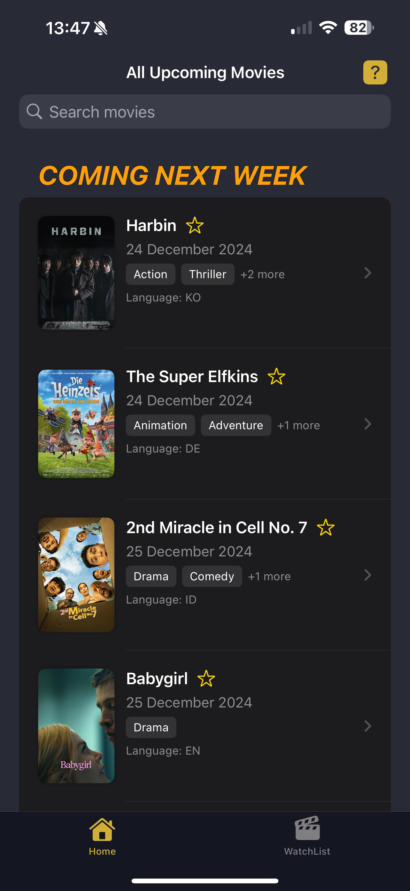
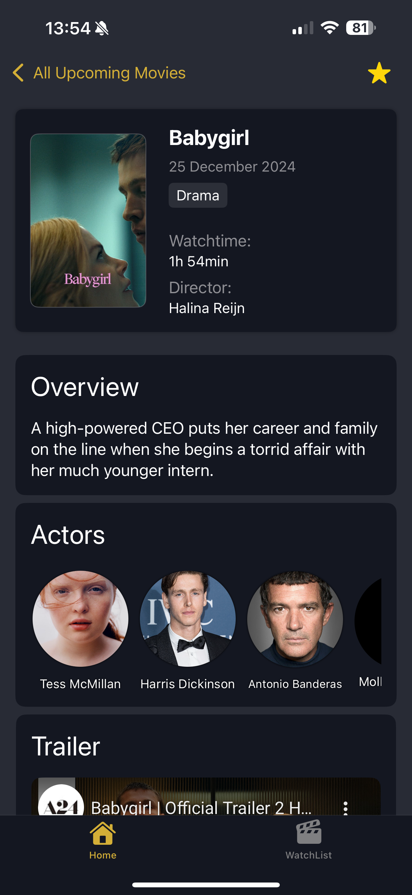
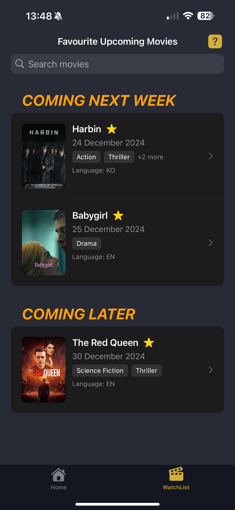

CINEXT
CINEXT is a comprehensive iOS movie tracking application that allows users to discover new upcoming movies and manage their watchlist. The app integrates with The Movie Database (TMDb) API to provide up-to-date information on movies, including descriptions, ratings, cast information, and more.
 View Repository
View Repository
Overview
With an intuitive interface and robust data management using SwiftData, CINEXT helps movie enthusiasts organize their viewing experience and discover new films based on their preferences. The app also features WidgetKit integration for quick access to watchlist content directly from the home screen.
Technology Used
CINEXT is built using modern iOS development technologies, ensuring a smooth and efficient user experience. The app leverages the power of Swift, SwiftUI, and SwiftData to provide a seamless interface and robust data management.

Key Features
CINEXT offers a range of features designed to enhance the movie discovery and tracking experience. Users can easily search for movies, view detailed information, and manage their watchlist with ease.
TMDb API Integration
Access a vast database of movies with detailed information and media content
SwiftData Storage
Efficiently store and manage movie data locally with Apple's modern persistence framework
Advanced Search
Find movies by title, genre, actor, or director with intuitive filtering options
WidgetKit Support
Quick access to watchlist directly from the iOS home screen
Gallery
Explore the visual design and user interface of CINEXT through the following screenshots. The app's clean and modern design enhances the user experience, making it easy to navigate and discover movies.
-

Home Screen
-

Movie Details
-

Watchlist